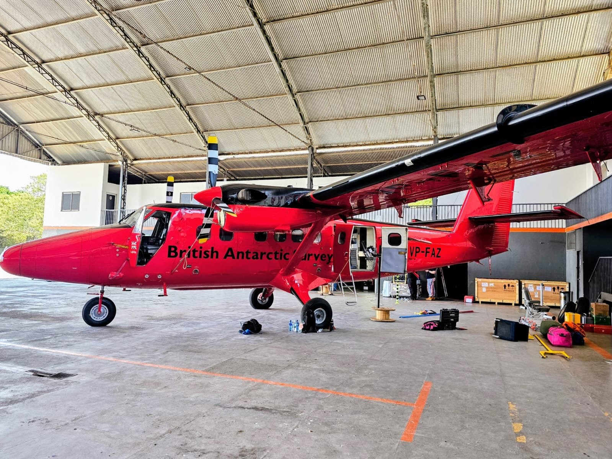

Desde 2025
CarbonARA-Brazil
Campanha internacional que mede, do solo, do ar e do espaço, os gases de efeito estufa e as emissões de queimadas em uma área de 100 por 100 km ao redor de Santarém. A Ufopa coordena as atividades locais.
Conheça o projeto →